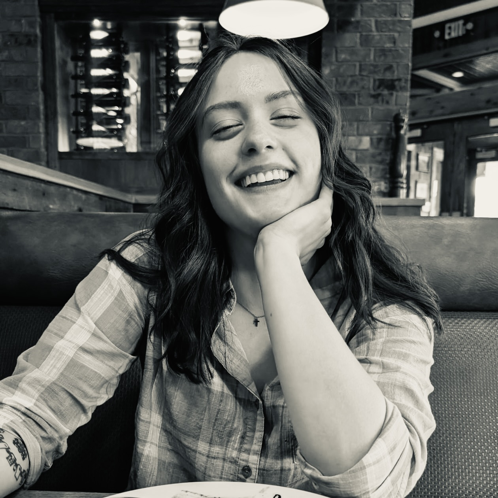

Take a look at my resume video!
Education Overview
Degree: Bachelor of Arts in Film Studies
Specialization: Film Production
School: University of Missouri, Columbia (MIZZOU)
Estimated Completion Date: May 2026
GPA: 3.390
Personal Background
I am a senior at the University of Missouri, pursuing a Bachelor's Degree in Film Studies with an emphasis in Film Production, with a certificate in Multicultural Studies. Through my education at MIZZOU, I have gained hands-on experience with filmmaking, cinematography, and editing software. All of these skills have strengthened my passion for visual storytelling, and I hope to inspire yours too!
In my free time I enjoy reading, crocheting, drawing and watching films from all sorts of decades, all of which continue to inspire me to stay creative and try new things.
As I continue to develop my skills, I aspire to build a career in film and media that allows me to collaborate with others and bring creative ideas to life.